The SSBMI Language Department has created a Miwok version of the game Go Fish! called "Wélse’!", in which players compete to collect the most pairs of matching animal cards while speaking Northern Sierra Miwok. Here, you can learn and practice the Miwok language that you need to be able to play "Wélse’!". We encourage you to use as much Miwok as you feel comfortable with, and remember to have fun too!
You can use the links below to jump to a specific part of this webpage:
If you would like to download a copy of the instruction cards for "Wélse’!" which you can print at home, please click here.
Animal names
The "Wélse’!" cards feature 32 local animals. You can listen to audio recordings of the Miwok names for these animals below:
English
Miwok
Chicken
Awá’’awle
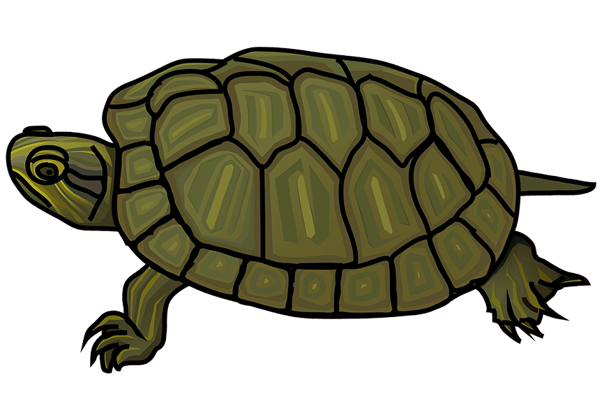
Turtle
Awánnaṭa
Dragonfly
Calákkukka
Western Bluebird
Cíwkolu
Dog
Cúku
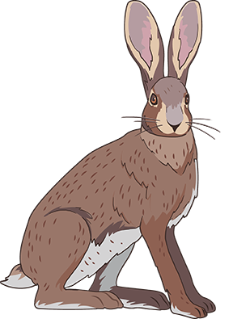
Jackrabbit
Éplaali
California Quail
Hékkekke
Cottontail
Hikáakɨ
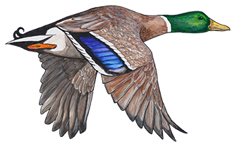
Mallard
Híkkasɨ
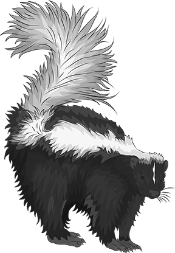
Striped Skunk
Híssikɨ
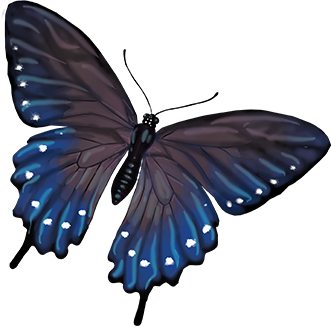
Butterfly
Hóllokkiṭiwwa
Turkey Vulture
Hú’’usu
Bear, Grizzly Bear
Ɨsɨ́ɨmaṭi
Deer
Ɨwɨ́ɨya
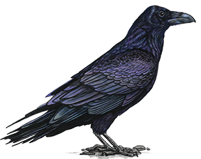
Raven
Káakulu
Hummingbird
Líiciici
Canada Goose
Lówwotu
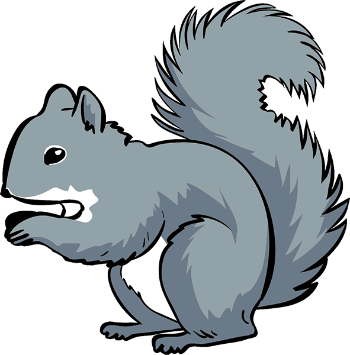
Gray Squirrel
Méewe
Coyote
Olé’cu
Acorn Woodpecker
Paláttata
Lizard
Sákkiṭi
Red-Tailed Hawk
Súyyu
Cat
Tónci
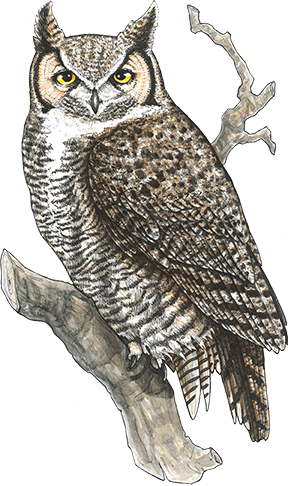
Great Horned Owl
Túkkuuli
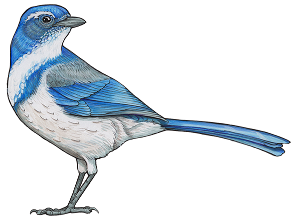
Scrub-Jay
Ṭáyṭi
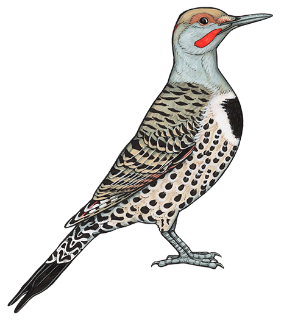
Flicker
Ṭíwwayɨ
Burrowing Owl
Ṭókkokko
Salmon
Ṭukúunu
Rattlesnake
Wákkaali
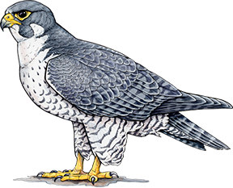
Peregrine Falcon
Wékwekɨ
Robin
Wíṭṭapɨ
Wild Turkey
Wóhholoote
Hɨ́y’ɨksɨs aa? (Do you know?) When selecting animals to include in "Wélse’!", we chose quite a few animals that you can find on the rancheria grounds! Keep your eye out for animals like Paláttata (Acorn Woodpecker), Ṭíwwayɨ (Flicker), Ɨwɨ́ɨya (Deer), and Wóhholoote (Wild Turkey) as well as other local animals like Éplaali (Jackrabbit), Cíwkolu (Western Bluebird), Calákkukka (Dragonfly), and Sákkiṭi (Lizard)!
Asking "Do you have _______?" and responding
While playing "Wélse’!", players take turns asking a second player whether they have a specific card. If the second player has that card, then they must give it to the first player. If they do not have that card, then they tell the first player to "go fish" by drawing from the draw pile.
You can ask someone "Do you have _____?" in Miwok using the following phrase. All you need to do is fill in the blank with an animal's name:
English
Miwok
Do you have _____?
_____-yakni’ aa?
Do you have Tónci?
Tónciyakni’ aa?
Do you have Káakulu?
Káakuluyakni’ aa?
Do you have Paláttata?
Paláttatayakni’ aa?
The only exception among the animals in "Wélse’!" is "Cúku" (Dog), whose name you pronounce slightly differently when you add "-yakni’ aa":
English
Miwok
Do you have Cúku?
Cukúuyakni’ aa?
Ménnantic! (Let's try it out!) Knowing this, how would you ask someone if they have the following animal cards? (highlight to see the answer):
English
Miwok
Do you have Súyyu?
Súyyuyakni’ aa?
Do you have Méewe?
Méeweyakni’ aa?
Do you have Awánnaṭa?
Awánnaṭayakni’ aa?
If the second player has the card that the first player asked for, then they say "Hɨ́ɨ’ɨ" (Yes) and give that card to the first player. They can also say "I have _____" by adding "-yakte’" to the end of the name of that card, like so:
English
Miwok
Yes
Hɨ́ɨ’ɨ
I have _____.
_____-yakte’.
I have Tónci.
Tónciyakte’.
I have Káakulu.
Káakuluyakte’.
I have Paláttata.
Paláttatayakte’.
Once again, the name "Cúku" (Dog) is exceptional in that you pronounce it slightly differently when you add "-yakte’" to it:
English
Miwok
I have Cúku.
Cukúuyakte’.
Ménnantic! (Let's try it out!) Knowing this, how would you tell someone that you have the following animal cards? (highlight to see the answer):
English
Miwok
I have Méewe.
Méeweyakte’.
I have Ṭukúunu.
Ṭukúunuyakte’.
If the second player does NOT have the card that the first player asked for, then they say "E’éh" (No). They can also say "I do not have _____" by adding "-’wat" to the end of the name of that card, like so:
English
Miwok
No
E’éh
I do not have _____.
_____-’wat.
I do not have Tónci.
Tónci’wat.
I do not have Káakulu.
Káakulu’wat.
I do not have Paláttata.
Paláttata’wat.
Note that when you add "-’wat" to the name "Cúku" (Dog), stress shifts to the second "u" but the second "u" remains short rather than long:
English
Miwok
I do not have Cúku.
Cukú’wat.
Ménnantic! (Let's try it out!) Knowing this, how would you tell someone that you do not have the following cards? (highlight to see the answer):
English
Miwok
I do not have Súyyu.
Súyyu’wat.
I do not have Olé’cu.
Olé’cu’wat.
Instead of saying "go fish", the second player then tells the first player "Wélse’!". This is a command to one person meaning "Go seek it!" in Miwok, instructing the first player to pick up a new card from the draw pile and add it to their hand.
English
Miwok
Go seek it!
(said to 1 person)
Wélse’!
More gameplay language
When you play "Wélse’!", you may want to use other "gameplay" language to talk to your opponents in Miwok. Here, you can learn how to tell them to take their turn, declare that you won, and more. We encourage you to use as much Miwok language as you feel comfortable with!
You can begin a game in Miwok using either of the following phrases. Note that the suffix "-ntic" means "Let's _____!" in both phrases:
English
Miwok
Let's play!
Áwwintic!
Let's begin!
Hoyáanantic!
You can declare whose turn it is using either of the following phrases. In Miwok, the verb "éntɨ-" means "to do" or "to be someone's turn":
English
Miwok
It is my turn.
Éntɨm.
It is your turn.
Éntɨs.
You can tell another player to "take" a card or "give me" a card using the following phrases. Note that both phrases are directed to one person:
English
Miwok
Take it!
(said to 1 person)
Wéele’!
Give it to me!
(said to 1 person)
Ámmeetɨ!
At the end of the game, you can declare that you won using the following phrase:
English
Miwok
I won!
Nákkanakkam!
Finally, you can ask to play again using the following phrase:
English
Miwok
Let's play again!
Áwwintic ecá’!
Hɨ́y’ɨksɨ’saynɨs aa ecá’? (Do you want to know more?)
If you would like to learn more about the Nisenan version of this game, called "Welk’óy!", please click here.
If you would like to learn more about how we created these games, including how we chose which animals to include, how we designed and obtained artwork for the cards, and who the language comes from, please click here or reach out to us at Language@ssband.org.
Would you like a copy?
If you would like a copy of the Nisenan "Welk’óy!" and/or Miwok "Wélse’!" cards to play at home, please contact us at language@ssband.org. Please understand that supplies are limited and we cannot guarantee copies for non-SSBMI Tribal Members.
If you would like to download a copy of the Miwok "Wélse’!" cards which you can print at home, please click here. (instructions)